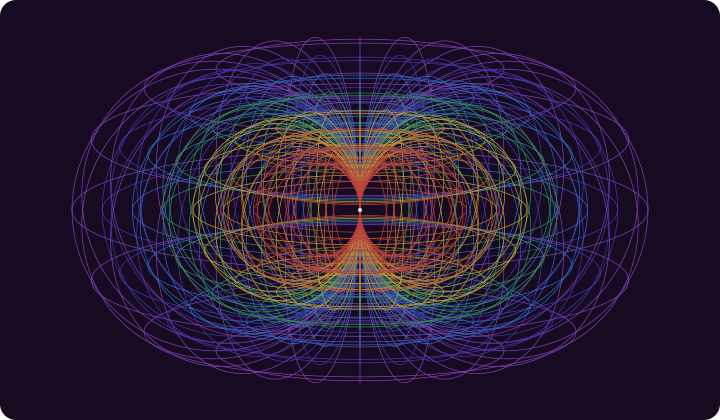

Aura: programmable facets and the returning pattern cycle
Aura is seven nested horn tori with programmable facets, where patterns are grouped, placed in addressable facet layers, selected into programmes, and used in permitted AI computation to create documents, websites and other useful artifacts. Corrections return to the patterns, groups and programmes. The person chooses the next stacks, and the cycle continues across several self frames and separately controlled access domains.
The controlling design source is U2, the user’s architecture correction of 11 November 2026. The record model, process contracts and worked example here are new design synthesis. The three observers and Minimum Viable Self contribute evidence and context to this larger architecture; they do not define the whole Aura. The companion illustrative data describes this process, not an installed engine or executed AI run.
Geometry, layers and programmes

Mathematical spatial reference, source HG1: seven nested horn-torus shells using R = r and the 12 × 24 address grid. This illustration depicts geometry; it does not establish AI capability, encryption or access control.
The seven shells are nested horn tori, with the horn relation R = r and a common pinch. Geometry addresses must survive display transformations. This guide assigns no invented cognitive names or functions to the seven tori. It does not equate a torus with a self, observer, privacy tier or questionnaire domain.
The current Matrix Studio profile has 12 × 24 base facets per shell: 288 per shell, 2,016 across seven, and 4,032 inside/outside base addresses. These describe an implemented address profile, not a measure of intelligence. Inside/outside is a geometric distinction. An outside facet is not automatically public, and an inside facet is not encrypted.
| Structure | What it holds | What its order means |
|---|---|---|
| Pattern group | Patterns with a stated association, purpose and membership rationale | No automatic execution order; a spatial or semantic reading rule must be named |
| Facet-layer stack | Outward layers attached to one base facet | Each layer retains its own records, instructions, required JSON and asset references; outward order can become recall/program order |
| Compute composition | Selected, version-pinned facet stacks or addressed layers, with explicit transitions and operations | A chosen programme across one or more stacks, preserving layer addresses and dependencies |
A facet-layer address contains torus + side + base facet + layer. Colour helps locate a layer but is not a globally unique identity or access credential. A layer can carry several records. The same pattern may be useful in several groups and at several addresses; those memberships retain a source identity and their own placement rationale.
The Matrix guide, especially “Stack facets into steps”, “Instructions, data and attached assets” and “Strings, loops and agent programs”, supplies the existing spatial and recall contract. Its browser supports Visit, Recall and Pause sequences, including outward-order recall from a stack. It exports an aura-agent-program/1 manifest or a SKILL.md containing that manifest. Those exports prepare instructions and data for another agent; they do not themselves run an external AI, install a skill or grant tool authority. The local guide and README were inspected for this description.
A compute runner must retain this structure. Flattening every attached record into one undifferentiated prompt would lose layer instructions, required data, program order, source context and review points. An adapter can translate the selected programme into model inputs and tool tasks, while retaining which addressed layer produced each task and result.
Records that make the cycle inspectable
| Record | Practical content | Revision rule |
|---|---|---|
| Pattern | Concept, observation, relationship, question, instruction, example or labelled hypothesis; source, meaning, conditions and permissions | New content receives a new revision; repeated inference does not become fact |
| Pattern-group revision | Memberships pinned to pattern revisions, reasons, relationships and an explicit or unresolved reading rule | Add, remove, split, combine or relate memberships without silently overwriting source patterns |
| Facet and layer binding | Geometry address, selected records, instructions, required JSON, assets, program identity and input/output contracts | Identify changes to content, placement or behaviour and the earlier binding they replace |
| Stack/composition | Explicit kind, chosen versions, outward layer sequence, cross-facet operations, dependencies and review gates | A saved programme does not silently acquire newly edited group versions |
| Run | Resolved inputs, self frames, granted capabilities, compute configuration, budget, actual status and output target | Freeze its manifest; record failure and missing inputs rather than inventing results |
| Artifact revision | Document, site, lesson, diagram or code; input lineage, producer, review state and release state | Keep the earlier result under its original access rules; link its correction |
| Correction | Target, author, evidence, issue, proposed change, scope and disposition | Preserve disagreement and limits; do not silently generalise to every self or situation |
| Self frame | Selected person/time/role/conditions, purpose, evidence and uncertainty | Revisit the representation without claiming to contain or replace the person |
| Access domain | Authorised principals, purposes, data, operations, key boundary, export rules and retention | A view change or new group membership never expands authority |
The many-to-many association matters. A worked example can belong to learning and artifact-making groups. Revising its assessment role need not erase its explanatory value. Two placed copies that diverge need explicit lineage; equal titles are insufficient. Matrix table allocation currently copies records to addresses. Synchronised pattern identities and revisions are requirements of this proposed bridge, not a claim about those existing copies.
One complete operating cycle
- Frame the result. Name a useful outcome: a lesson someone can teach, a site someone can navigate, a service prototype someone can try, or another concrete artifact. Select self frames, audience, output destination and evidence of improvement.
- Resolve permitted inputs. Select relevant sources, MVS entries, observer accounts, artifacts and corrections. Record exact revisions and the data available to each worker. Unknown or declined information stays absent. A group title is not permission to retrieve all its contents.
- Form or choose groups. Identify reusable concepts, relationships, constraints and examples. State why each belongs. Preserve alternatives where a spreadsheet box or reading direction is ambiguous. Membership may cross domains and geometry positions.
- Prepare facet layers. At each selected address, pin records, instructions, required data and assets. State the operation and output contract. One layer may specify an evaluation, another produce a document, another examine a counterexample. These are chosen bindings, not fixed torus functions.
- Choose the composition. Retain each facet stack’s outward sequence and specify transitions between stacks. Identify prerequisites, pauses, review points, budgets and outputs. Resolve versions before work begins. Select an alternative composition when a different ordering or evidence could produce a meaningful comparison.
- Compute and create. An authorised runner executes the instructions with its actual tools. Independent tasks may run concurrently; a website task depending on a lesson waits for that revision. Record model/program version, inputs, outputs, tool use and actual cost/time when known. Recalling a layer does not establish that its instruction ran.
- Encounter the artifact. Inspect it and use it in an agreed real activity. Separate observed actions, narrator interpretation, participant meaning and speculation. Fictional rehearsal may expose design problems but is not a learner result or customer endorsement.
- Correct and regroup. Attach each issue to a claim, pattern, membership, instruction, asset or artifact. Revise a pattern, change its role, split a group, alter layer order or retain a disputed alternative. Produce new revisions and identify affected compositions without automatically changing them.
- Choose again. Deliberately select new versions and state what the next result could change. Preserve the previous run. Continue, compare, defer an unresolved dependency or stop when the purpose is met.
This production-and-learning cycle should yield useful work and better representations. Grouping and retrieval change computation context; they do not automatically train model weights. Training, if chosen later, needs its own data permission, procedure and evaluation.
During full immersion, background workers may prepare sources or artifacts while the person learns, eats or takes suitable low-demand exercise. Dependency and attention constraints still apply. Count human elapsed time once and machine work separately. Hyper-mode streams remain 260–300 delivered words per minute; pauses, answers and making time are separate from streamed words.
Several selves, three observers and access domains
A person may choose a present teaching frame, a making frame, an earlier self in its actual conditions, or a possible future frame under named assumptions. Each draws on selected relevant records. They are not automatically separate people, and choosing a frame does not make speculation true. Compare how the same artifact serves two frames without forcing one answer to replace the other.
Within an encounter, the environment observer describes the widest available scene evidence; the character-attention observer distinguishes available cues from those noticed; the narrator describes responses and interaction, separating interpretation. The participant supplies their own meaning and corrections. These can become selected patterns, test cases or review evidence. MVS supplies a qualified starting representation. Neither mechanism determines the geometry or replaces the full programme. The observer lineage is S02 pp. 28–32 and G3 p. 24; self/access distinctions also appear in G3 pp. 5–8.
Keep these axes separate: geometry address, group membership, self frame, observer view, access domain, review state and release state. The same self frame can have public, private and secret representations with different permitted uses. Releasing one selected explanation does not release its source archive.
| Domain | Intended authority | Required separation |
|---|---|---|
| Internal private | Selected private material for a stated purpose and authorised participants/workers | Private storage and key/access boundary; no automatic secret access or public export |
| Internal secret | More narrowly authorised material and operations | Independently controlled key/access boundary; private-domain keys or permissions cannot unlock it |
| External public | Released material and authored public examples, with fewer capabilities | No inherited internal inputs, embeddings, logs, keys or tools; readability grants no publication or external-action authority |
Distinguish permissions for storing, reading, retrieval, computation, training, revision, export, recipient sharing, publication and external action. A record may be permitted for one private draft without permission for training or publication. Worker permission is bounded by the user’s grant, task and every input’s applicable restrictions. Group membership cannot launder restricted material into public context.
Mixed-source artifacts retain applicable input restrictions until a selected release projection is authorised and inspected. That projection is its own record with a clear lineage boundary. Public references must not reveal forbidden internal titles, relationships or correction details. A public reader sees the permitted projection, not an automatic route to protected inputs.
Encryption is an implementation requirement
Private/secret separation requires real storage, key management and access enforcement. The static workbook, browser labels and geometric views do not provide that security. This guide chooses no cryptographic algorithm or product and claims no implemented encrypted vault.
The implementation must protect private and secret data in storage and transit under independently controlled boundaries; keep keys out of public files, prompts and exports; define key access, rotation, recovery and revocation; and check policy and key authority before decryption. Authorised computation should expose plaintext only to its permitted worker and task. Temporary files, embeddings, caches, logs, crash reports and backups need domain-aware handling.
Metadata also matters: a group name or connection can reveal protected information. Revocation must state which future access it stops and what cannot be recalled from earlier authorised exports. Before calling the domains operational, demonstrate denied access, private/secret separation, controlled export and recovery. These are implementation acceptance conditions, not tests this guide claims to have passed.
Fictional public example: a lesson and its companion site
Everything in this example is authored for explanation: Alex, the teacher/maker self frames, runs, learner responses and reviewer findings. It contains no real personal answers, internal records, model calls, publication actions or achieved learning outcomes. The data file preserves all IDs and revisions. The two facets are deliberately unplaced; a real Matrix run must choose their full base addresses rather than silently assigning them to named tori.
Iteration one: make the first artifacts
Alex selects SF-teacher@1, to make a useful adult lesson, and SF-maker@1, to explain it through a page. The purpose is to help someone make and improve an artifact through Aura.
Three groups supply the work:
- G-learning@1 combines purpose, worked example, recognition check and choice of a low-stakes task.
- G-making@1 combines the same worked-example pattern with pinned versions and artifact lineage. The example therefore has two memberships.
- G-shared@1 carries fictional provenance, the observer distinction and the difference between drafting and publishing.
FS-lesson@1 has three outward layers: recall purpose and boundaries; compose the lesson; review its evidence. Each has selected records, instructions, required JSON and assets. FS-site@1 recalls the resulting lesson, composes the page and checks its boundaries. CS-workshop@1 chooses lesson stack followed by site stack, because the page needs that lesson revision. R01 is an authored trace of this programme.
The first lesson is a 20-minute draft: 2 minutes to choose a purpose, 6 to explain the cycle, 5 for an example, 5 to match labels to a diagram and 2 to close. Its completion line says, “Matched the labels: ready to build independently.” This is deliberately faulty: the exercise supplied recognition evidence, not independent application.
The first page is headed Your first Aura, with Start, Create and Complete navigation. Its introduction centres the personal record and observer loop; its result panel says “Lesson ready”. This deliberately incomplete draft lets supporting mechanisms stand in for the whole architecture and obscures the artifact states.
C01 records the fictional teaching problem: matching labels did not demonstrate making a new stack. The recognition pattern remains useful, so it moves into G-recognition@1 rather than being deleted. A new transfer pattern creates G-transfer@1, and G-learning@2 now requires making and revising a new-task artifact.
C02 records the page problem. New patterns require the complete architecture explanation, explicit input/stack/result/revision stages, and public capabilities without internal inheritance. These produce G-making@2 and G-shared@2. Layer bindings are revised, then Alex deliberately chooses CS-workshop@2. Earlier artifacts and programme versions remain in history.
Iteration two: let the correction change the work
R02 chooses the revised groups and FS-lesson@2 → FS-site@2. It produces second lesson and page drafts without rewriting the first run’s record.
| Minutes | Revised lesson activity | Evidence to retain |
|---|---|---|
| 0–2 | Choose a low-stakes purpose and teacher or maker frame | Purpose, frame and public input scope |
| 2–5 | Inspect the seven tori and one outward facet stack | Distinction between geometry, programme and access |
| 5–8 | Follow records, instructions, required data and assets | Layer sequence and lesson-to-page dependency |
| 8–13 | Choose a new artifact purpose and groups/stacks | Pinned selection, expected output and a result that could change the choice |
| 13–17 | Apply supplied fictional feedback and regroup | Correction target, changed membership/instruction and next versions |
| 17–20 | Explain the change and what remains unknown | Artifact lineage and proposed real follow-up |
The lesson now requires a selected group revision and layer order, a draft or explicitly labelled manual rehearsal, a correction linked to a claim or operation, and a revised group with a next-stack choice. Recognition and application receive separate records. No score establishes whole-person completeness.
The revised page is headed Patterns into practice. It shows the seven-torus structure and selected stacks, labels examples fictional, lists inputs and versions, links both artifact revisions and offers an explicit revision route. Its panels are Inputs → Choose stacks → Create draft → Inspect result → Revise. The Create draft panel says the displayed drafts are authored examples; a connected authorised runner would be required for new AI computation. Public reading grants no publish action.
A second fictional editorial review adds two useful corrections. C03 asks for an explicit comparison between geometric inside/outside and access permissions, including an example of denied internal access; it creates a new pattern and G-shared@3. C04 asks for before/after membership and binding differences so a person can deliberately choose the next programme; it creates another pattern and G-making@3.
Those groups support a proposed next selection under SF-next@1, a possible future frame conditioned on an actual trial. No third run is claimed; its bindings still need preparation. The open questions are practical: can a willing learner choose a fresh stack without copying; can they distinguish a group revision from an artifact revision; and which new grouping or ordering changes the result?
What a working bridge must demonstrate
The first integrated implementation should resolve real Matrix addresses and exported manifests, preserve outward order, reject missing required data, and connect selected instructions to an authorised runner. It should create a document and site draft with versioned lineage, accept a targeted correction, produce new group/binding revisions, and let the person deliberately choose the next programme.
It should demonstrate the access boundary: an external-public task cannot retrieve private/secret material, infer permission from geometric views, or publish because it can read. Changed groups must leave earlier runs reproducible. Failed workers should leave honest partial results and restartable dependencies.
The present contribution supplies the architecture, contracts and two-iteration public walkthrough. Existing Matrix navigation and export features remain distinct from the proposed compute, corrective regrouping and encryption services. The separate Geode and Verse Box guide covers the physical settings; this software geometry does not redefine either workstation.